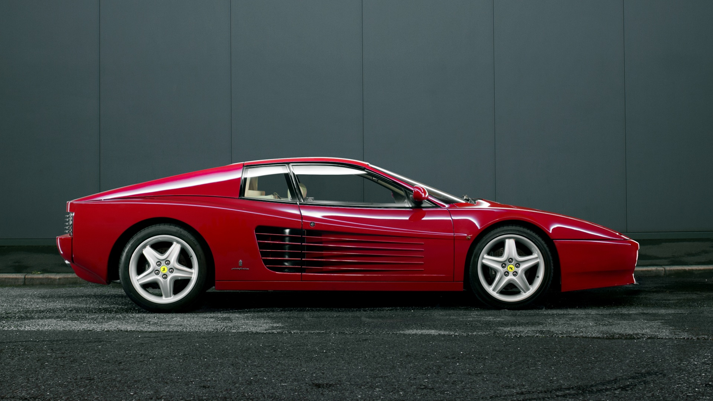
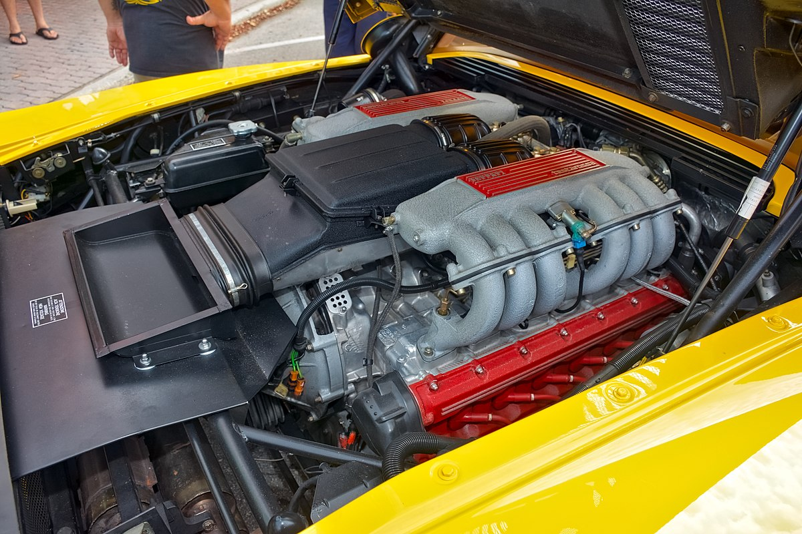
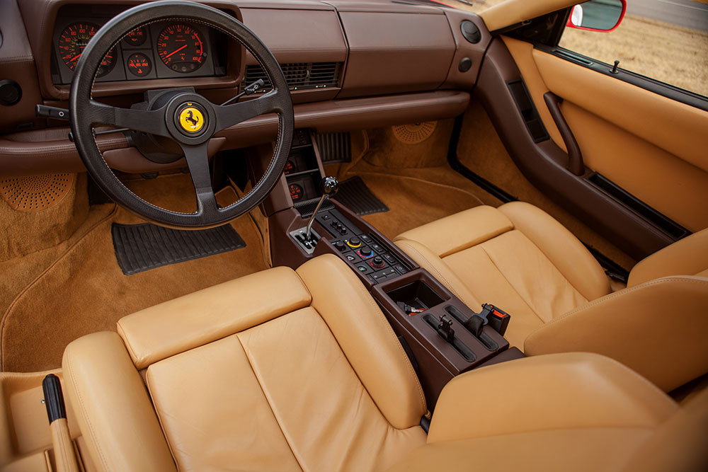
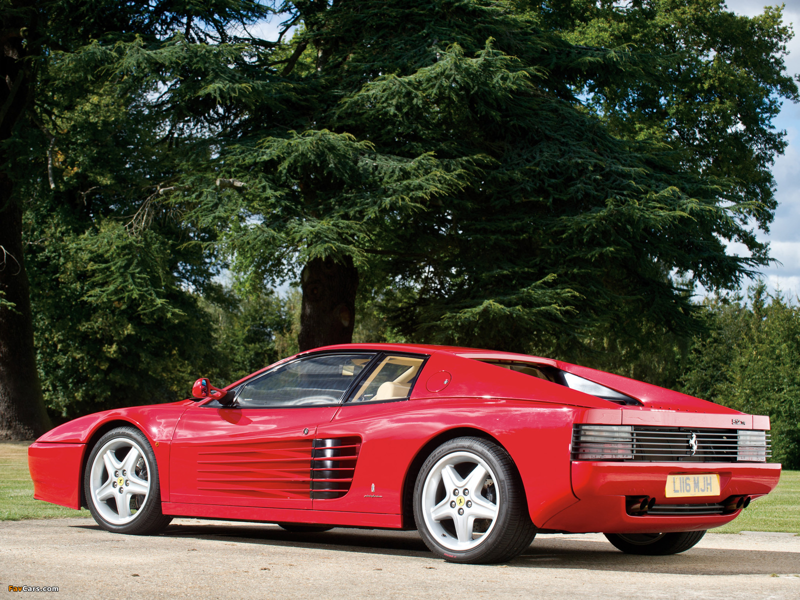
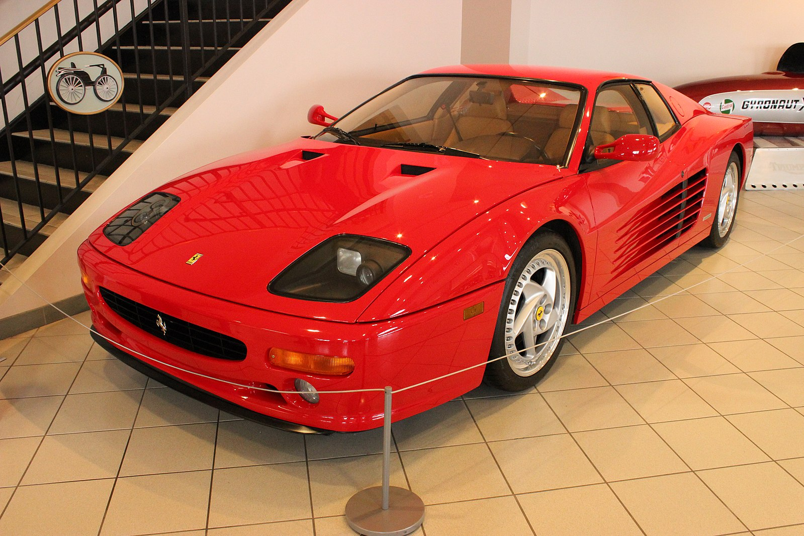

| ГЛАВНАЯ | ИНФО |
Звук запуска:
Ferrari Testarossa – итальянский среднемоторный спортивный автомобиль компании Ferrari. Оригинальный Testarossa выпускался с 1984 по 1991 год.
Машина была быстрой, дорогой (примерно $181.000 в США) и эксклюзивной, но публика оказалась не готова к её появлению. Testarossa впервые представили в Парижском автосалоне в 1984 году. После десятилетия господства обтекаемого дизайна этот жестко агрессивный автомобиль со вздыбленной лошадью на капоте был не тем, к чему привыкли покупатели Ferrari. Последовавший за красавцем Boxer невероятно широкий Testarossa в глазах многих выглядел довольно неуклюжим, но это не помешало компании продать все собранные машины.
В октябре 1984 года в Париже впервые было показано спортивное двухместное купе Ferrari Testarossa. Перевод с итальянского слова «Testarossa» означает «Красная голова», так как головки цилиндров силового агрегата были окрашены в красный цвет. При изготовлении кузова Феррари Тестаросса широко использовались пластик и алюминий.
Силовая установка – 5-ти литровый 12-ти цилиндровый оппозитный атмосферный двигатель, выдающий 390 л.с. и максимальный крутящий момент в 490 Нм при 4500 об/минуту. Двигатель имел 2 распределительных вала и 4 клапана на цилиндр. Система впрыска топлива - Bosch K Jetronic, система зажигания - Magnetti Marelli Microplex. Это позволяло итальянскому скакуну разгоняться до сотни за 5.8 секунд, и достигать максимальную скорость в 286 км/ч.
Внутренняя отделка салона Ferrari Testarossa была выполнена в более роскошном стиле, чем у его предшественника Ferrari Berlinetta Boxer. Появились новые сиденья, кожаное рулевое колесо Momo и новая приборная панель.
В 1992 году появилась новая модификация Testarossa — 512TR. Машина подорожала ($189.500), стала чуть легче и немного изменилась внешне (новый передний бампер и более простая панель, закрывающая двигатель).
Характеристики двигателя немного подросли. Степень сжатия повысили до 10.0:1 (в сравнении со старым – 9.2:1) мощность увеличилась до 428 лс при 6750 об/мин, а крутящий момент до 491 Н·м при 5500 об/мин.
В 1994 году представили заключительную версию Testarossa — F512M. Машина стала ещё легче. Мотор опять прибавил в мощности. Степень сжатия опять возросла до 10.4:1 мощность увеличилась до 440 лс при 6750 об/мин, а крутящий момент до 500 Н·м при 5500 об/мин.
Модель опять изменилась визуально. Главным отличием были фары и задние фонари. Если ранее фары были выдвигающимися, то теперь они были интегрированы в кузов и прикрыты стеклами. Сзади же появились 4 «кругляша» (по 2 с каждой стороны), вместо забранных решеткой блоков, которые надолго стали фирменной чертой различных моделей Ferrari. Так же модель получила новые передний и задний бампера.